Best Practices — Completing the Yoda Metadata Form¶
Best Practices — Completing the Yoda Metadata Form¶
A practical guide to completing the Yoda Metadata Form for A-LIFE researchers
Overview
This guide is part of A-LIFE RDM GEMs → Guides.
This document provides best practices for completing each metadata field in the Yoda Metadata Form, required when submitting data for archiving.
Supporting materials: Metadata and Documenting Data in Yoda, Archiving Data in Yoda, Essentials — Licences
Authors: Irene Martorelli, Brett Olivier — Last modification: 2026-07-28 — Version: 1.3.1
 What is the Yoda Metadata Form?¶
What is the Yoda Metadata Form?¶
The Yoda Metadata Form is attached to each folder in your Research Space. You can add metadata to the root folder of your project, or to each subfolder individually. Metadata is essentially "data about data" — structured information about your dataset, such as its topic, creators, and the circumstances under which it was collected, that helps others find, understand, and reuse it. In Yoda, this structured metadata follows the DataCite standard, so your dataset is consistently described and — if published — findable through DataCite Commons.
Metadata will always be visible when data is published in Yoda, independently of whether it is open or closed access. Follow the documentation on how the published data package looks to see an example.
List of Metadata Fields of the Yoda Metadata Form¶
This list follows the order as found in the form. The order of the fields in this guide follows the order of fields in the Yoda metadata form as accessed on 2025-07-18.
Important
Not sure where to find the form? Follow the instructions on how to access it in our Accessing the Yoda Metadata Form documentation.
Before you submit
Please ensure all mandatory fields are completed, and double-check free-text fields for typos before submitting. The Yoda portal session can time out while filling in the form — click SAVE frequently (top left corner of the metadata form) to avoid losing your input. All Mandatory fields are marked with an asterisk in the form.
Metadata Field occurrence mapping¶
| Type | Occurrence | Definition | Property Example |
|---|---|---|---|
| Mandatory | (1,1) | Exactly one item is required | Title |
| Mandatory | (1,N) | At least one item is required, multiple values allowed | Contributor |
| Recommended | (0,1) | Optional, at most one item | Version |
| Recommended | (0,N) | Optional, multiple items allowed | Discipline |
Title¶
Metadata
Definition: A minimum description for the content in the datapackage
Type: Mandatory
Occurrence: 1,1
 Best Practices for a good Title¶
Best Practices for a good Title¶
- The Title should contain main keywords relevant to the data.
- Should not be longer than 255 characters.
- The Title is comprehensible to other disciplines, try to use more generic common words rather than specific, technical terms.
- Should not be a single, generic word. For example
Dataset. - Think of a catchy Title. A title is a good key to help others find you and your work.
- Make a Title distinguishable. Try not to use the same title for naming different datasets of the same collection.
- The Title does not begin with a backslash (
/) and avoid using special characters, for examples, symbols such as#, $, /n. - The Title should be written in the same language as the rest of the metadata fields.
 Examples of good and not so good Titles¶
Examples of good and not so good Titles¶
 Good Title This is concise, includes key terms that are related to the datapackage, keywords and description of the project and is understandable across disciplines. (ref: DOI) Good Title This is concise, includes key terms that are related to the datapackage, keywords and description of the project and is understandable across disciplines. (ref: DOI) |
|---|
| Good Title 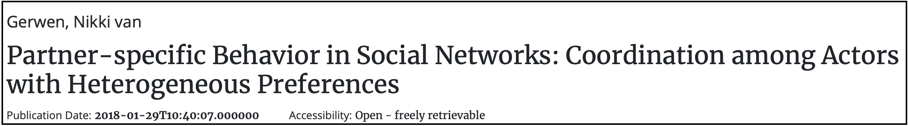 This contains explicit words. It is specific and part of social science and it is clear to other disciplines. (ref: DOI) |
 Bad Title Bad Title 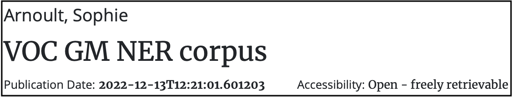 Title uses a set of acronyms that are difficult to comprehend what the datapackage is about. (ref: DOI) |
| Bad Title 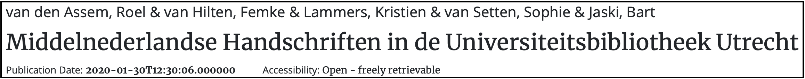 This title is provided in dutch, while the rest of the metadata fields, including the abstract are provided in english. (ref: DOI) |
Description¶
Metadata
Definition: A brief summary of the datapackage
Type: Mandatory
Occurrence: 1,1
Best Practices for a good Description¶
- The description is an abstract of the datapackage of a study, it should not describe a manuscript/article.
- A description is no longer than 2700 characters.
- The description should not contain the description of a README file (e.g. a full list of method parameters and values, and/or a pipeline description).
- Check typos as these are not controlled.
Examples of good and not so good Descriptions¶
| Good Description 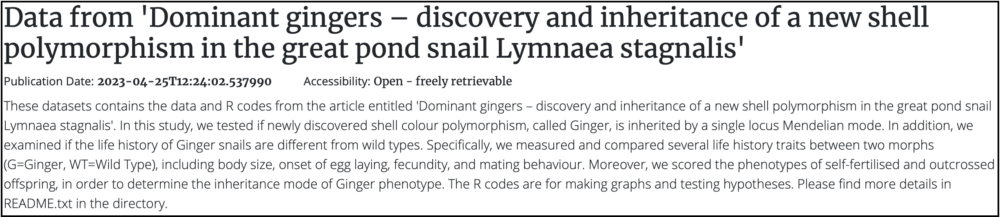 A clear summary to use for a Description. It does not contain specific details. The README file contains more details of the method and the parameters used (ref: DOI) |
|---|
| Good Description 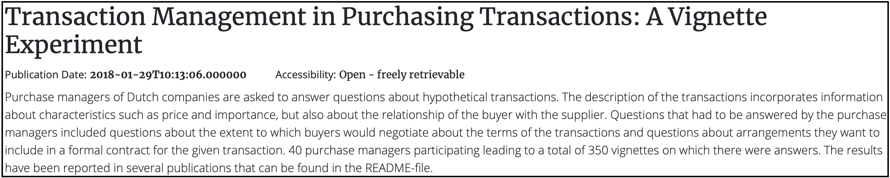 A clear description of the content within the datapackage. Results are not included here, but relevant resources are provided in the README file (ref: DOI). |
| Good Description 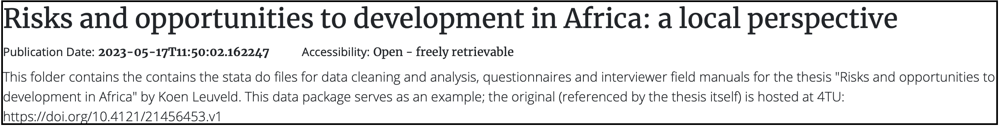 Data content in relation to a publication is provided (ref: DOI) |
| Bad description the description is lengthy and detailed, with many parameters that distract the reader, making it hard to understand what the data is about (ref: DOI). |
Discipline¶
Metadata
Definition: The scientific branch associated to the datapackage
Type: Mandatory
Occurrence: 1,N
Best Practices for a good Discipline¶
- At least one sub-discipline should be provided for categorizing the research datapackage.
- It is recommended to look into the 6 main Disciplines classification used in Science (OECD, Revised field of Science and Technology (FOS) classification 2007) if there is uncertainty regarding which category the datapackage belongs to.
- More than one sub-discipline can be added by selecting the ( + ) button.
- In general, data of A-LIFE falls into: "1. Natural Sciences" and "3. Medical and Health Sciences".
Version¶
Metadata
Definition: Assigning a number that identifies the status of the development of the resource
Type: Recommended
Occurrence: 0,1
Best Practices for a good Version number¶
- It is highly recommended to provide the Version value =
1.0.0when submitting the datapackage for the first time. - For each sequential minor change, increment the Version number (e.g.
1.1.0follows1.0.0). - A Version should be provided when there are minor content changes.
How does semantic versioning work?
Read more about versioning: Introduction to semantic versioning
Language¶
Metadata
Definition: Is the main language of the data package
Type: Mandatory
Occurrence: 1,1
Best Practices for a good Language selection¶
- One Language needs to be selected from the drop down menu; by default
Englishis selected. - The reference list follows ISO 639-1 standard names.
- The same language should be used across all metadata fields, in particular Title, Description, and the README file.
Collection Process¶
Metadata
Definition: A date range that provides the duration of the data collection for the datapackage
Type: Recommended
Occurrence: 0,1
Best Practices for a good Collection Process range¶
- Use the calendar to select the Start date — a close estimate of when work on the data started.
- Select an End date when data collection is complete.
- Make sure the date range follows chronological order — the End date cannot be earlier than the Start date.
Location(s) covered¶
Metadata
Definition: A geographical place that is associated to the data package.
Type: Recommended
Occurrence: 0,N
Best Practices for a good Location¶
- Free text field — make sure the spelling is correct.
- Provide the name(s) of the location(s) where data was collected, generated, or where experiments were conducted.
- More than one Location can be provided using the (+) symbol.
- It is recommended to provide location names in English.
Not sure which geographic name to use?
Use Getty Thesaurus of Geographic Names to look up reference geographic names.
Period covered¶
Metadata
Definition: A date range that provides the duration period of working on the data
Type: Recommended
Occurrence: 0,1
Best Practices for a good Period Covered¶
- Start date — when work on the data started (e.g. project start date).
- End date — can be the actual date of submission of the data package in Yoda.
- Make sure the dates follow chronological order.
Keywords¶
Metadata
Definition: Keywords associated to the datapackage that increase discoverability.
Type: Recommended
Occurrence: 0,N
Field name changed
Please note that the field name Tags has been renamed to Keywords.
Best Practices for a good Keyword¶
- Use Keyword terms that help to find your work.
- A Keyword can consist of one or multiple words.
- Avoid using commas
,or semicolons;to separate keywords — they will not be parsed as distinct terms. - Use the plus button ( + ) to add each keyword separately.
- Include keywords associated to the Title and Description.
- Keywords longer than 255 characters will raise an error.
- Do not use parameter-style values (e.g.
mean,2.5,2x). - Avoid acronyms and abbreviations that are not unique across disciplines.
- Check typos and avoid special characters (
#, $, /n, !, "", &).
Examples of good and not so good Keywords¶
| Good Keywords 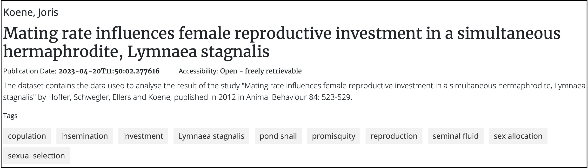 Distinct tags relevant to the datapackage and terms from the title. (DOI) |
|---|
| Good Keywords 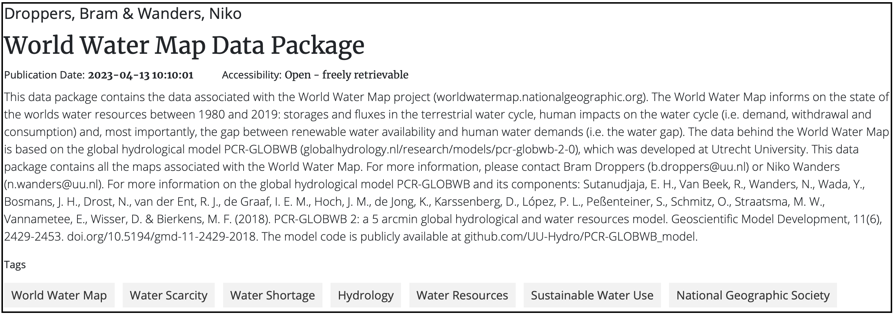 Keywords added with the " + " option, relevant to the datapackage. (DOI) |
| Keywords not parsed 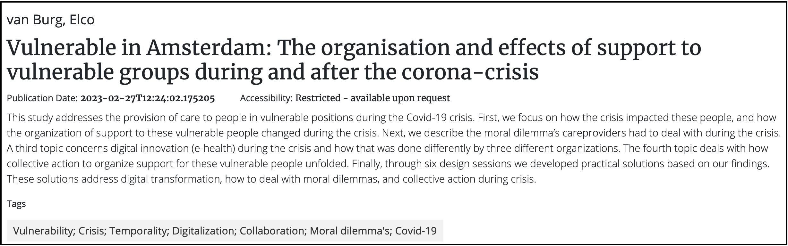 Keywords separated with " ; " — not parsed as distinct terms. (DOI) |
| Keywords not useful for searching 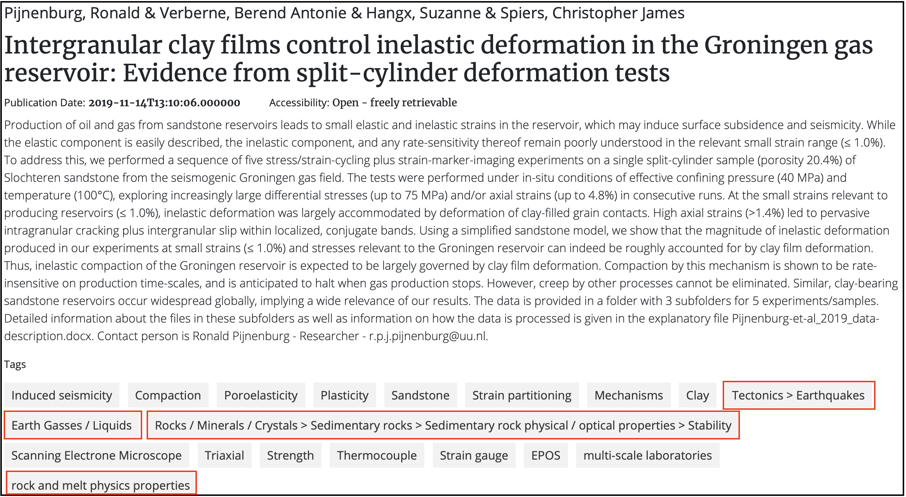 Keywords are function/condition values — too specific to be useful for search. (DOI) |
Related resources¶
Metadata
Definition: Used for referencing the current data package to other (related) works
Type: Recommended
Occurrence: 0,N
Field name changed
Please note that Related datapackages (Identifiers) has been renamed to Related resource.
Best Practices for a good Related resource¶
- Provide an associated related resource — a publication, website, or other digital source relevant to the data.
- When providing a Related resource, the fields Relation type, Title and Persistent Identifier are mandatory.
- Relation type is selected from the drop down menu (DataCite Relation Types).
- Title is the name of the resource (max 255 characters).
- Persistent Identifier requires a Type and an Identifier (URL). Use HTTPS.
- Multiple resources can be added using the ( + ) button.
Tip
Recommended Relation Type values: IsSupplementTo, IsSupplementBy, IsPartOf, HasPart
(Source: DataCite relationType)
Example of a good Related resource¶
How to provide a good Related resource
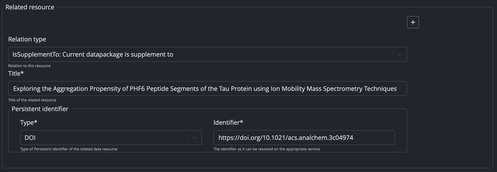
Provide the full URL for the Identifier so it can be resolved. In this example the related resource is a published manuscript.How it looks once published
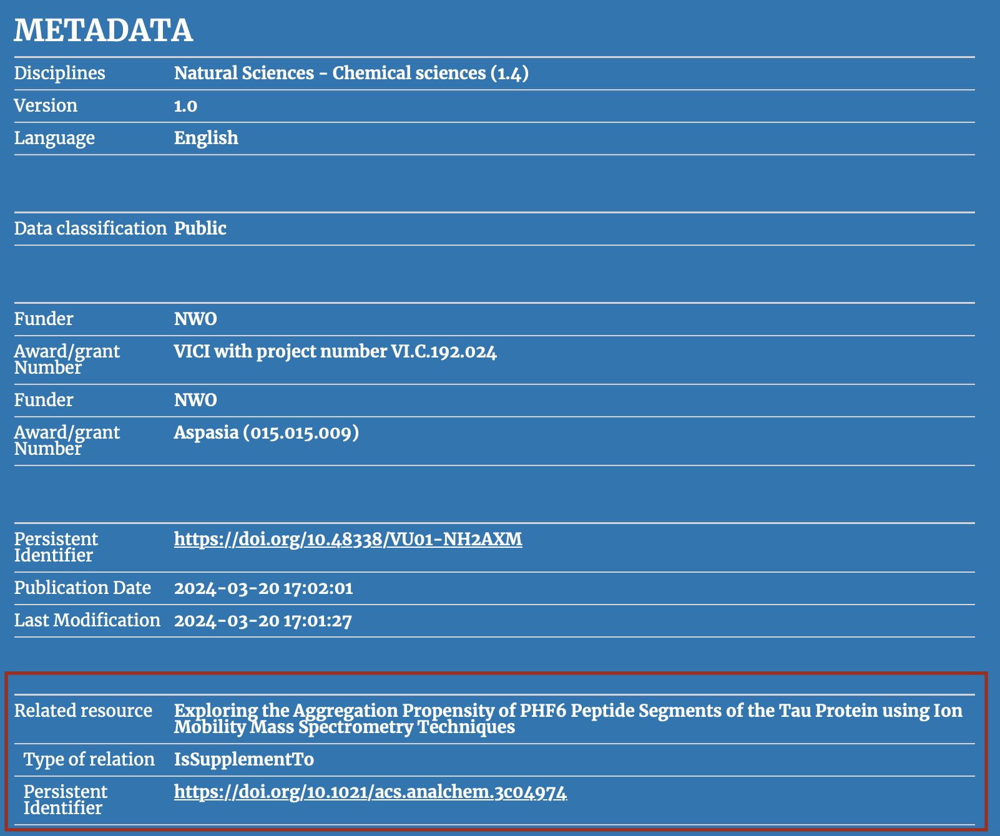
The DOI is resolved and visible in the published metadata. (DOI)Retention period¶
Metadata
Definition: The minimal number of years the data will be kept in archive.
Type: Mandatory
Occurrence: 1,1
Best Practices for a good Retention period¶
- Insert an integer value for Retention period.
- The default is
10years. This is recommended for unpublished data; a shorter period can be specified, at minimum for the duration of the project. - Data that is published must be archived for a minimum of
10years.
Retention information¶
Metadata
Definition: Extra information regarding the retention period
Type: Mandatory
Occurrence: 1,1
Best Practices for a good Retention information¶
- Free text field — keep it clear and without typos.
- If the Retention period is modified from the default (10 years), provide a justification here.
- Should not be longer than 255 characters.
Embargo end date¶
Metadata
Definition: A period during which a published dataset remains unavailable to the public.
Type: Recommended
Occurrence: 0,1
Best Practices for a good Embargo end date¶
- Only required when an embargo applies — leave blank otherwise.
- The default date is the current date.
- The date must be chronologically after the submission date.
Warning
The Embargo end date will not appear in the published metadata — it is used by administrators only to know when data can be released.
Data type¶
Metadata
Definition: The type of the data contained in the datapackage.
Type: Mandatory
Occurrence: 1,1
Best Practices for a good Data Type¶
- Selected from the scroll down menu.
- Options:
Datapackage,Method,Software, orOther Document. Datapackageis the default and recommended unless the folder contains only a method or software.
Data classification¶
Metadata
Definition: A category level of sensitivity given to the data in case of data loss or theft.
Type: Mandatory
Occurrence: 1,1
Warning
VU Yoda no longer uses Low, Medium, High and Very High. Classification now aligns with Utrecht University.
Best Practices for a good Data classification¶
- Selected from the scroll down menu:
Public,Basic,SensitiveorCritical. - For most A-LIFE research data, the classification is
Public. - When
Public, the Data Package Access should be set toOpen - freely retrievable. - When
Sensitive/Critical, contact the RDM team to discuss a custom storage solution.
Data classification examples
| VU classification | Example |
|---|---|
| Public | publicly shared information, e.g. on a website |
| Basic | internal use, shared within your group/institution |
| Sensitive | health information, patient data |
| Critical | passwords, royal/military data, federal tax data |
Name of collection¶
Metadata
Definition: The name of the main collection the data package belongs to.
Type: Recommended
Occurrence: 0,1
Best Practices for a good Name of collection¶
- Ensure all data packages in the same Collection use the same Name of collection. This can be the Project Name.
- Free text field, max 255 characters.
Funding reference¶
Metadata
Definition: The name(s) of the funding organisation(s)
Type: Recommended
Occurrence: 0,N
Best Practices for a good Funding reference¶
- Requires two fields: Funder and Award number (max 255 characters each).
- The same Funder can have multiple Award number(s) — add each with the ( + ) symbol.
Remarks¶
Metadata
Definition: Important information about the datapackage for administrators
Type: Recommended
Occurrence: 0,1
Best Practices for a good Remark¶
- Max 2700 characters.
- When data access is
Restricted, it is required to provide a contact person's full name and email address here. - This information will not be published — it is used by administrators only.
- The datapackage manager and PI should be listed as contact persons.
Example of a good Remark¶
A good remark
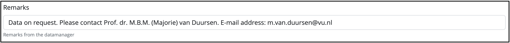
Full name and email address of a permanent project leader is provided.
Creator¶
Metadata
Definition: The author of the research data — the main person who worked on the data.
Type: Mandatory
Occurrence: 1,N
Warning
 With the updated Yoda metadata form, it is now possible to automatically retrieve the ROR identifier when an Affiliation name is selected.
With the updated Yoda metadata form, it is now possible to automatically retrieve the ROR identifier when an Affiliation name is selected.
Best Practices for a good Creator¶
- Required attributes: Name, Affiliation and Person Identifier.
- Given Name = first name (and middle names); Family Name includes prefixes (e.g. "van Rijn").
- Select the Affiliation name from the dropdown — the ROR identifier is then auto-filled.
- For VU-affiliated creators, select
Vrije Universiteit Amsterdam. - It is highly recommended to provide an ORCID for each creator.
- The order of creators follows the order of authorship, as in a manuscript.
 Available Person identifier Types in Yoda
Available Person identifier Types in Yoda
| Person identifier Type | Comment |
|---|---|
| ORCID | Open Researcher and Contributor ID |
| DAI | Digital Author Identifier — unique national number for Dutch university researchers |
| Scopus | Abstract and citation database identifier |
| ResearcherID (Web of Science) | Unique identifier across the Web of Science ecosystem |
| ISNI | ISO certified global standard number for contributors to creative works |
Source: Datacite nameIdentifierScheme
Contributor¶
Metadata
Definition: A person analogous to a co-creator, listed in the Acknowledgements of a manuscript.
Type: Optional
Occurrence: 0,N
Best Practices for a good Contributor¶
- A Contributor is someone who would appear in the Acknowledgements of a manuscript, not listed as Creator.
- If a person is both a Creator and a Contributor, list them only as Creator.
- The same name and affiliation rules as for Creator apply.
- It is good practice to include the Project Leader and/or Supervisor(s) as contributors.
- The Contributor type specifies the role — select from the dropdown.
Tip
See Datacite — List Values Contributor Types for definitions of all contributor roles.
Data Package Access¶
Metadata
Definition: How the data will be accessible once archived.
Type: Mandatory
Occurrence: 1,1
Field name changed
Data Package Restriction has been renamed to Data Package Access as of 2025-07-01.
Best Practices for a good Data Package Access¶
- Options:
Open - freely retrievable,Restricted - available upon request,Closed. - Select
Openwhen data is classified asPublic— data will be publicly accessible. - Where possible, non-sensitive data should be made
Open. - When
Restricted, provide a contact person in the Remarks field and in theCustomLicense. - When
Closed, only the metadata will be visible — the data itself will not be accessible.
License¶
Metadata
Definition: The license under which the data package is made available to third parties.
Type: Mandatory
Occurrence: 1,1
Best Practices for selecting a license¶
- Selected from the scroll down menu.
- Recommended:
Creative Commons Attribution 4.0 International Public License — CC BY 4.0. - When a license is selected from the menu, the license file is automatically included in the data package.
- When
Customis selected, you must manually add a license.txt file to the data package.
Check data accessibility and license
If Restricted or Closed is selected in Data package access, the only available license option is Custom.
Refer to the VU RDM Manual — License templates for the VU Restricted license template and VU Closed license template.
Not sure which license to pick?
For an overview of common research data licenses and what they mean, see GEMs → Essentials → Licences.